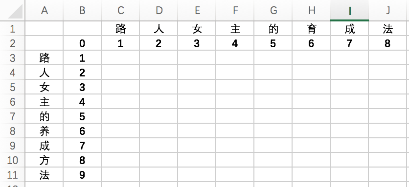
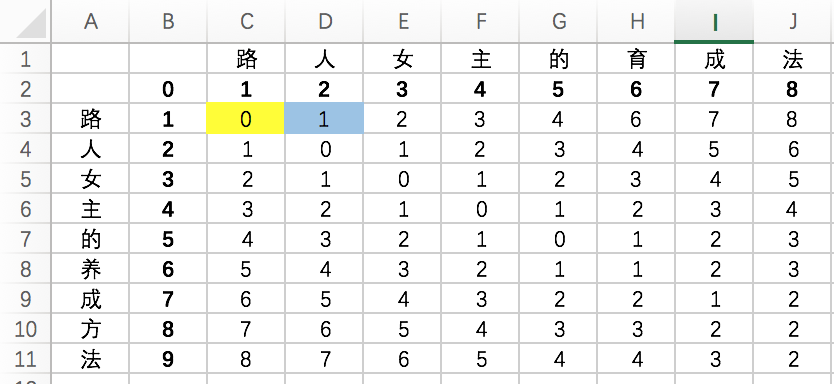
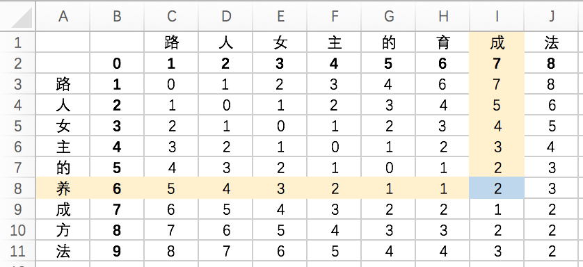

字符串相似度计算
字符串相似度计算非常有用。我刚刚在自己的番组管理工具中加入了它。这样当我在添加新的动画或电影名时，它就能帮我去数据库中找找有没有相似度高的名字，以防我把同一个番组用不同的名字再填一遍。我这里用到的算法是Levenshtein，它又叫“编辑距离”算法，是俄国科学家Vladimir Levenshtein在1965年发明的。百度上有一堆介绍它的文章。如果你会PHP的话，那么从4.0.1版本起有一个叫levenshtein()的函数可供你直接使用。详细的API介绍在这里。我这里只是想把它用自己的大白话再说一遍，并且在后面尝试给出JAVA代码。
我们现在有两个字符串（没错，我是死肥宅）：
String strA = "路人女主的育成法";
String strB = "路人女主的养成方法";
 接下来，我们要在表格中填满数字，填满后，相似度也就可以算出来了。
 那么，这堆数是怎么算出来的？
先来看图中黄色单元格，格子上面、左面和左上的数字分别是1，1，0。再来看这个格子上面和左面的字符，都是“路”字，所以我们把上面和左面的数字加1，左上角的数字不变。于是现在我们得到了2，2，0这三个数字。把这三个数字中最小的一个，也就是0写在单元格中。这个格子就算填完了。
再接下来看右面的蓝色格式，它的上、左和左上也有三个数字（其中左面的数字是我们刚刚填上的），分别是2、0、1，再来看格子上面和左面对应的字符，分别是“人”和“路”字，是两个不同的字符。所以我们把这三个数字分别加1，就得到了3、1、2这三个数字。把这三个数字中最小的一个，也就是1填到蓝格子中就算完成了。
以此类推，就可以把整个表格填完。这些数字代表什么？代表一个字符变成另一个字符串的代价（距离）。代价越高，两个字符串间的相似度就越低。
我知道你是不太明白。看下面这张图。
 图中蓝格中的数字是2，上面格子中的字符是“成”字，左面的是“养”字。它代表，要把上面的字符串“路人女主的育成”变成左面的字符串“路人女主的养”的代价是2。也就是说只要做2步操作，它们就会完全相同：
1、把“育”字改成“养”字；
2、再把“成”字删掉。
这张表格的最后一个数字，也就是右下角的数字，就是这两个字符串间互相转换的代价。
相似度=1-右下角的数字/两个字符串中最长串的字符数。
在这个例子中，右下角的数字是2，最长的字符串长度是9（左面的那个），相似度=1-2/9=0.78。原理懂了，代码也就不难写了。下面是我写的代码，因为本人水平比较渣，所以简单看看就好：
public static int calcLevenshtein(String strA, String strB) {
char[] cStrA = strA.toCharArray();
char[] cStrB = strB.toCharArray();
int[][] resultArray = new int[cStrA.length + 1][cStrB.length + 1];
// 初始化矩阵
for (int i = 0; i < resultArray.length; ++i) {
resultArray[i][0] = i;
}
for (int j = 0; j < resultArray[0].length; ++j) {
resultArray[0][j] = j;
}
// 开始计算距离
for (int i = 0; i < cStrA.length; ++i) {
for (int j = 0; j < cStrB.length; ++j) {
resultArray[i + 1][j + 1] = Math.min(Math.min(
resultArray[i + 1][j] + 1, resultArray[i][j + 1] + 1),
resultArray[i][j] + (cStrA[i] == cStrB[j] ? 0 : 1));
}
}
float r = 1
- resultArray[resultArray.length - 1][resultArray[0].length - 1]
* 1f / Math.max(cStrA.length, cStrB.length);
return (int) (r * 100);
}
(Fin.)